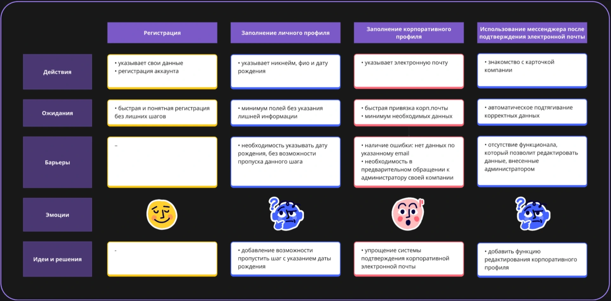
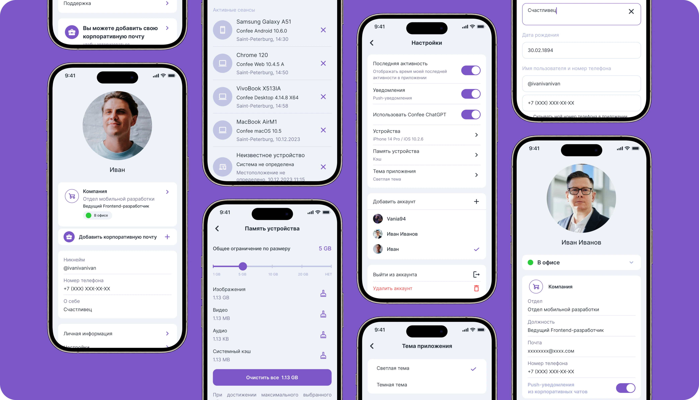
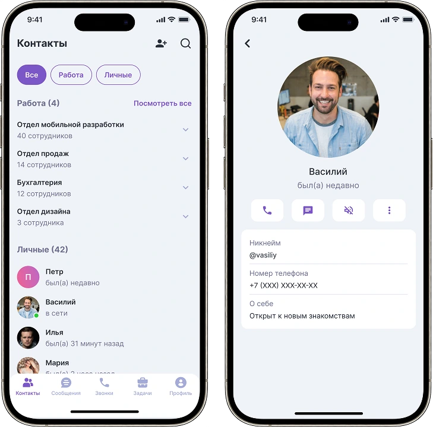
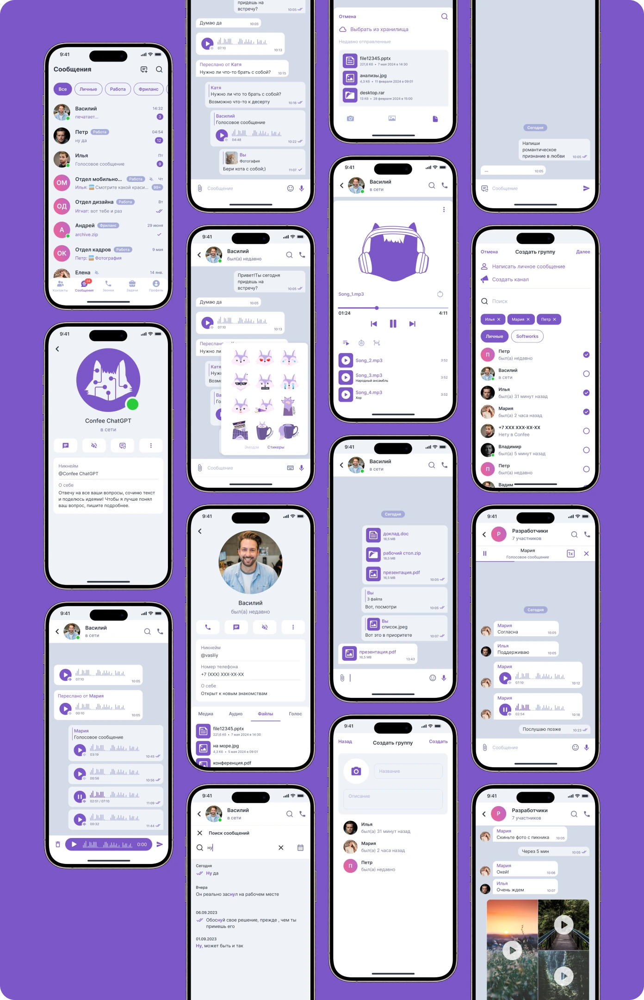
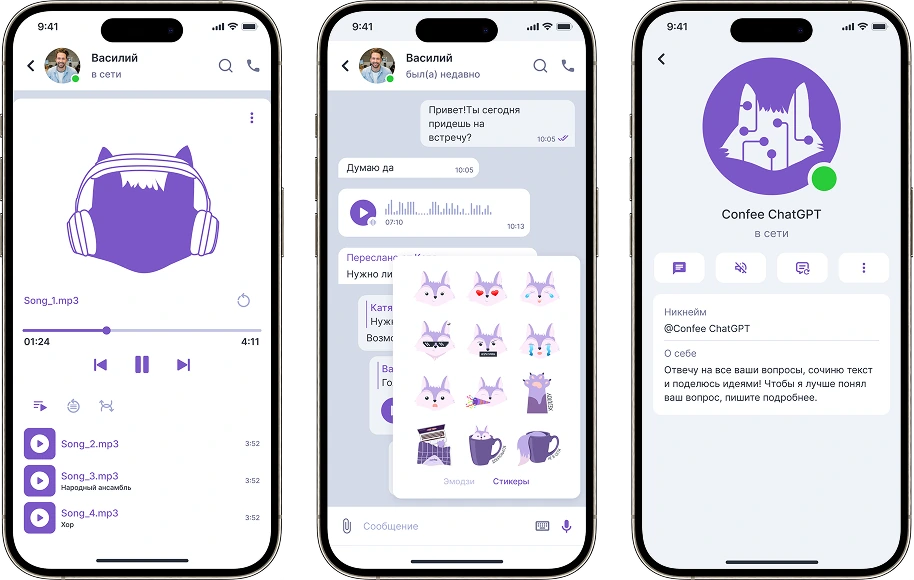

Мессенджер даёт возможность в рамках одного приложения разделять личное и рабочее пространства без опасения за конфиденциальность личных данных.
Обладает необходимым и достаточным набором функциональности для продуктивного использования.

Задачи и цели
- Расширение функциональности мессенджера и его дизайн
- Редизайн текущего интерфейса
- Создание UI-kitа
- Создание маскота для повышения консистентности
Что было сделано
- Провела конкурентный анализ
- Составила портреты пользователей
- Провела глубинные интервью и юзабилити тесты
- На их основании построила CJM и выявила пользовательские барьеры
- Сделала UI-кит и создала дизайн интерфейсов.
- Создала маскота
- Провела А/В-тестирование совместно с аналитиком
Результат
⭐ В результате редизайна, количество активных пользователей, зарегистрировавших корпоративный профиль, увеличилось на 25%.
Customer Journey Map

Ключевая потребность
Пользователь хочет использовать мессенджер, который совмещает возможность корпоративного и личного общения с разделением пространства
Почему было принято решение о CJM?!
- Пользователи регистрируются на платформе, создавая личные пространства, однако, большая часть из них не оформляет и не использует корпоративный профиль.
- При помощи CJM хочу узнать почему это происходит и выявить барьеры и боли пользователей
- Чтобы пользователи оценили удобство пользования мессенджером и захотели зарегистрировать корпоративный профиль
Портрет
ИМЯ: Иван Иванов
ВОЗРАСТ: 30 лет
ДОЛЖНОСТЬ: Менеджер в IT-компании
ОСНОВНЫЕ ЗАДАЧИ: Быстрое перемещение между двумия пространствами: корпоративный и личный. Удобство в управлении личными и рабочими задачами.
ПРОБЛЕМЫ: Боится упустить важные письма, встречи или дедлайны. Неудобно использовать несколько мессенджеров одновременно.
ЦЕЛЬ: Быстрое и удобное перемещения между двумя профилями: корпоративным и личным.
ПОВЕДЕНИЕ: Использует приложение ежедневно, несколько раз в день. Имеет опыт работы с аналогичными продуктами, но ищет более удобный и функциональный инструмент.
ПСИХОЛОГИЧЕСКИЙ ПОРТРЕТ: Ответственный, амбициозный, ориентированный на экономию времени и результат, стремится к оптимизации процессов
Интерфейс
Профиль
Легкое и удобное общение с коллегами без пересечений с личными контактами.

Контакты
Список контактов вашего корпоративного профиля полностью повторяет структуру вашей компании, включая отделы и должности сотрудников.

Чат
Обладает необходимым и достаточным набором функциональности для продуктивного использования.

Mascot и стикерпаки
